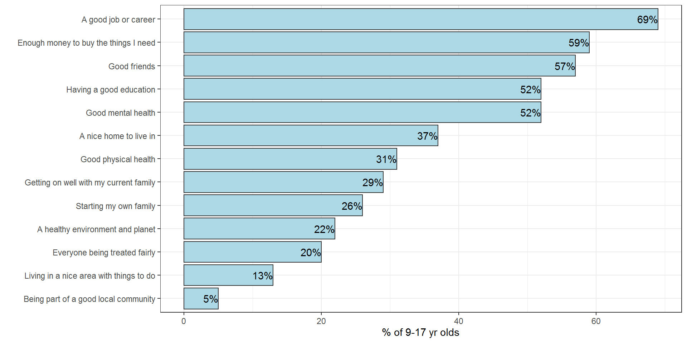

Follow us


Children aged 9-17 were asked: “When you grow up, which things, if any, do you think will be most important for you to have a good life? Choose up to 5 things from the list below.”
The options to choose from were:
The chart below shows what proportion of children chose each option.
Note children can select more than one option
